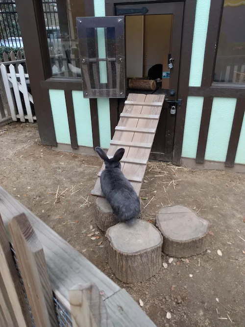

Highlights
-Decendants of the Flemish Giant
-Recognized by the BRC, but not the ARBA
-Can get a little larger than Flemish Giants
More Information
The Continental Giant is a breed of domestic rabbit that is closely related to the Flemish Giant. They are, like their ancestors known for their large size and gentle temperament. Much about the Flemish Giants can also be said about the Continental Giant. They first appeared around the early 1890s and were sold for meat and fur. Since then, they have become a popular choice of pet for lovers of giant rabbits. The American Rabbit Breeders Association (ARBA) does not recognize them as a distinct breed. The British Rabbit Council (BRC) does recognize them as a distinct breed in two categories, white and colored. The main differences between the two breeds are in their physical characteristics such as ear and head shape. The Continental Giant usually has a larger head and broader shoulders. They have also been said to grow slightly larger than the Flemish Giant and have denser bone structure.